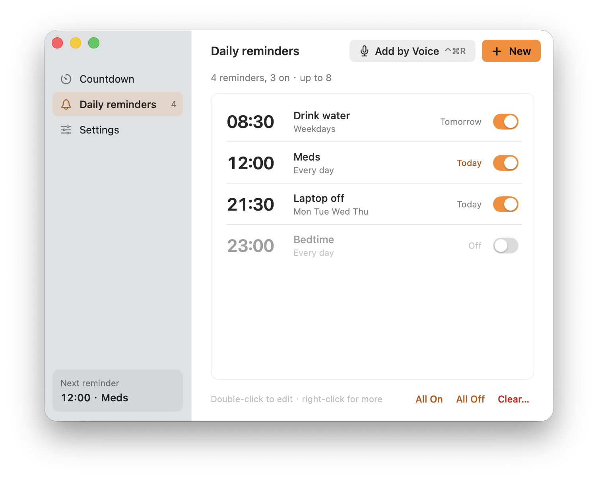
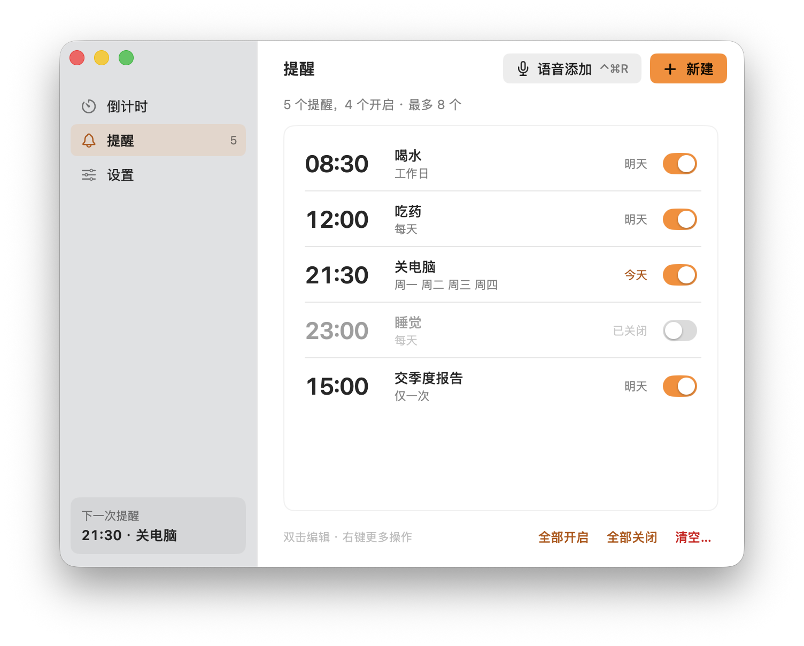
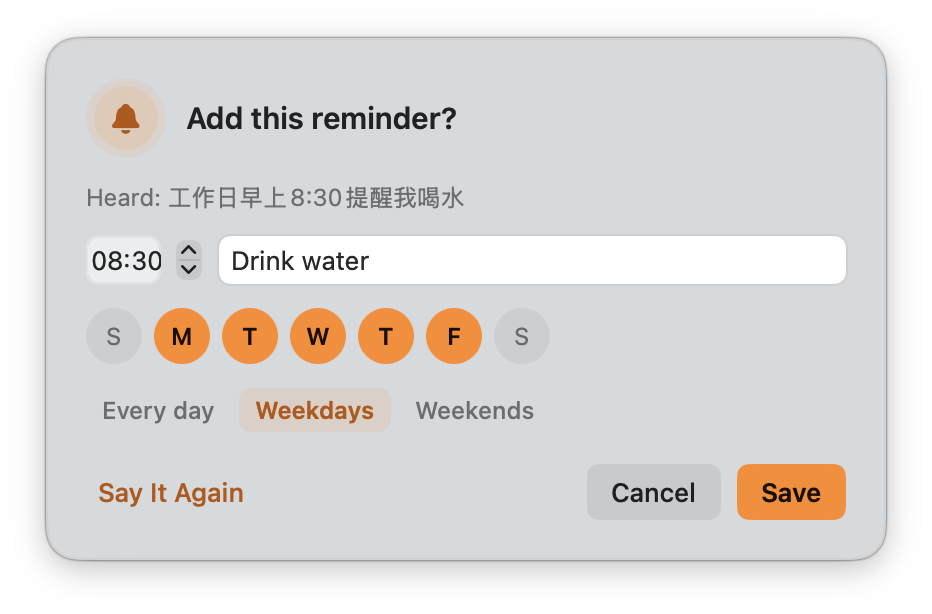
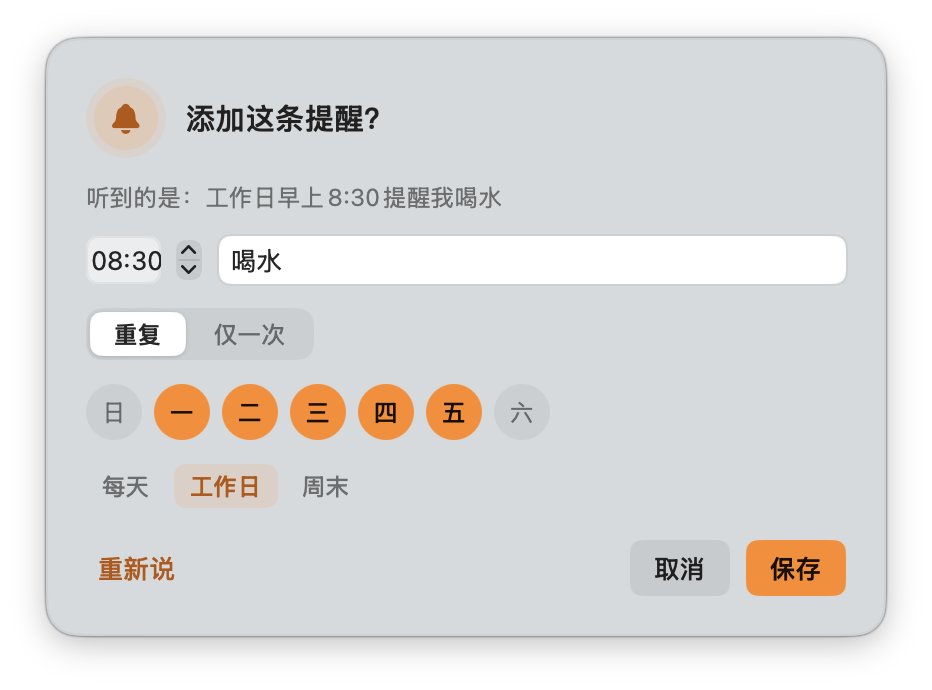
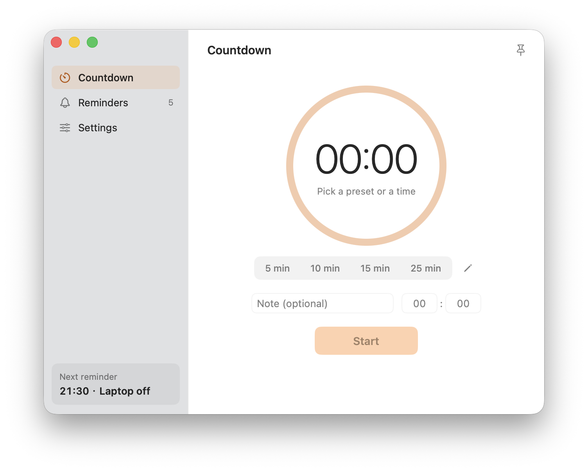

Reminders you can’t scroll past.躲不掉的提醒。
When it’s time, Chivvy puts the reminder on top of everything, full‑screen apps included, and keeps chiming until you deal with it. 时间一到，Chivvy 把提醒弹到所有窗口最上面，全屏应用也挡不住，铃声一直响到你处理为止。
- Free for personal use个人使用完全免费
- Source code on GitHub源代码全部公开
- No account, no ads无需注册 · 没有广告
Built for the reminder you’d otherwise ignore.专治那些你本来会忽略的提醒。
On top of everything压在一切之上
The alert floats over every window and every Space, even a full‑screen app. The sound loops until you respond, and stops by itself after 45 seconds.弹窗浮在所有窗口和桌面空间之上，全屏应用里也看得到。铃声循环播放直到你回应，45 秒后自动停止。
Snooze, but not forever能推迟，但不能一直推
Push it back 5 or 10 minutes, three times at most. After that the only button left is “Got it”.可以推迟 5 或 10 分钟，最多 3 次。之后只剩下“知道了”一个按钮。
Still there after sleep睡眠醒来照样提醒
Missed a reminder while the Mac was asleep? It shows on wake if it’s under 30 minutes late. If Chivvy isn’t running, macOS delivers it as a notification.Mac 睡眠时错过的提醒，只要晚了不到 30 分钟，唤醒后会补弹。Chivvy 没在运行时，由系统通知兜底。
Bedtime, water, stretching. Every habit in one place.睡觉、喝水、拉伸，所有习惯一处管理。
Up to eight reminders, each on the days you choose: every day, weekdays, weekends or any mix. Turn them on and off, edit, or clear a batch at once.最多 8 条提醒，每条自选星期几：每天、工作日、周末或任意组合。可以单独开关、编辑，也能批量处理。




Press ⌃⌘R. Say it once.按 ⌃⌘R，说一句话就行。
“十分钟后提醒我关火” (turn off the stove in ten minutes) starts a countdown. “工作日早上八点半提醒我喝水” (water at 8:30 on weekdays) becomes a daily reminder, after a quick look to confirm.说“十分钟后提醒我关火”，直接开始倒计时；说“工作日早上八点半提醒我喝水”，确认一下就成为每日提醒。
A timer that lives in your menu bar.住在菜单栏里的计时器。
One click on a preset, or type minutes and seconds. The time left shows in the menu bar and on the Dock icon. Space pauses, Return starts, Esc cancels.点一下预设，或输入分秒。剩余时间显示在菜单栏和 Dock 图标上。空格暂停，回车开始，Esc 取消。
Light and dark follow your system. English and Chinese, switched in Settings or from the menu bar.浅色 / 深色跟随系统；中英文界面，在设置或菜单栏里切换。

Let it chivvy you.让它来催你。
Free · source on GitHub · version 3.0 · under 3 MB免费 · 源码公开 · 版本 3.0 · 不到 3 MB
Chivvy isn’t notarized yet. On first launch, open System Settings → Privacy & Security and choose Open Anyway, or run xattr -dr com.apple.quarantine /Applications/Chivvy.app.
Chivvy 尚未经过苹果公证。第一次打开如被拦截，请到 系统设置 → 隐私与安全性 点“仍要打开”，或在终端运行 xattr -dr com.apple.quarantine /Applications/Chivvy.app。